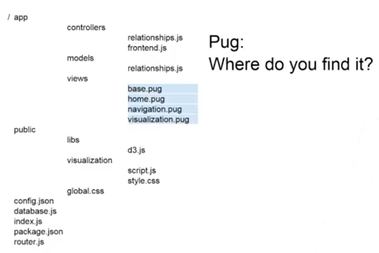
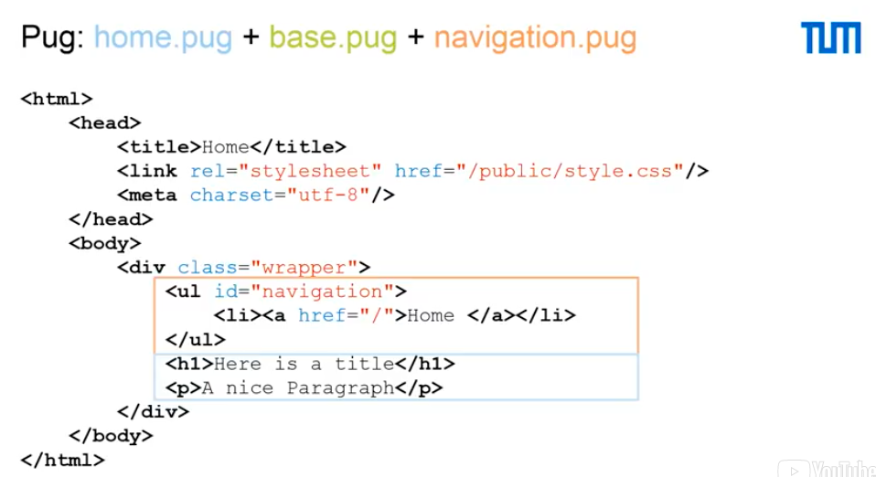

This time we are going to see the last component that you need to build a complete application, which has also a view component. The view engine that we used is Pug, as already mentioned in previous videos.
Pug was renamed after a legal matter with the original name, which was called Jade. Pug gives us a way to define reusable and extendable HTML components. What this means is that you have to view web pages as pieces, a set of pieces. So, there is the navigation, there are different menus, there is the actual content of the page and, for example, the footer. You can use Pug to define all of these components and use them dynamically in the different views. Pug has a simplified syntax. It's very close to the syntax that you would ordinarily see in your normal HTML files, but it's simpler in the sense that you don't have the closing brackets and you don't have all of this major and minor signs. In Pug, you can also use control statements, like each and if, which allow you to, for example, handle variables that you pass the view through the controller. So, for example, through the controller you pass the title. You can specify a location that if the title is defined, you want to show the title at that location.
Let's look at where we can find Pug in our complete example.
We can find Pug in our complete example in the four highlighted files. These are the base.pug, the home.pug, the navigation.pug and the visualization.pug. They are inside the views folder, which again is inside the app folder on the root of our application. We take a look now at the base, home and navigation.pug. There are simplified version of these files, but the actual files are pretty similar and the concepts are definitely the same. So, let's look at them.
On the top in green, you see the base.pug, on the bottom in orange you see the navigation.pug and on the bottom on the left in blue you see the home.pug. This is actually what we want to access when we navigate to the home of our application. We are going to load the home.pug, but the home.pug extends the base.pug, so we will start from there. The base.pug starts with an HTML tag, which is the starting point of every HTML file. It then has a head part, which contains, for example, metadata about the encoding of our HTML file, which in this case is utf-8. It contains also a link to a stylesheet, which in this case is public/style.css and it contains a title of the page. As I've said, you can pass variables to the pug files and in this case we pass the variable title as the title of the page. So, when we construct the pug file, we actually pass it this variable and I encourage you to look at the controller for the front-end where this is very visible. The next thing that we are going to look at is the body. I just see that there is a dot wrapper. This is similar to CSS notation, which means dot wrapper represents a div or a dividing item of class wrapper. Similarly, in UL hash tag navigation we have a UL element of id navigation. We're going to see more what CSS is used for and how it works in later sessions. So, let's look at include navigation. This is an important directives. It tells Pug that when you are loading this file, which is the base.pug, it has to include a navigation.pug precisely in that location. It will then include everything that is in navigation.pug, which in this case is just a ul or unordered list with the hashtag navigation, which means it has the id navigation. One list item, which has an a href, which is a link to the home. Also, the name of this link will be home itself. The next interesting part of our base.pug is the block content. In Pug, we define blocks, which are extendable parts of our HTML file. In this case, we want to extend the base in our home.pug and we want to extend the base based on the block content. So, we extend block content by writing block content and every element that follows that block content statement will be put exactly where the block content is in the base.pug. So, in this case, we will put there an h1, which will be here is a title and that p for the paragraph, a nice paragraph.
So, let's look at the outcome of these three files combined.
If we connect to the home, which means example.dallago.us, this is pretty much what we see. As you see, the navigation has been loaded as an unordered list with one list item and then h tag to the home and then we have the extension of a base, which is the home.pug with the h1 title here is the title and the p paragraph, a nice paragraph. So, with this part, we have covered also the last part of our application. We have seen the views and in the previous videos we have seen the models and the controls. I invite you to look more at our code together with me in the next demonstration.